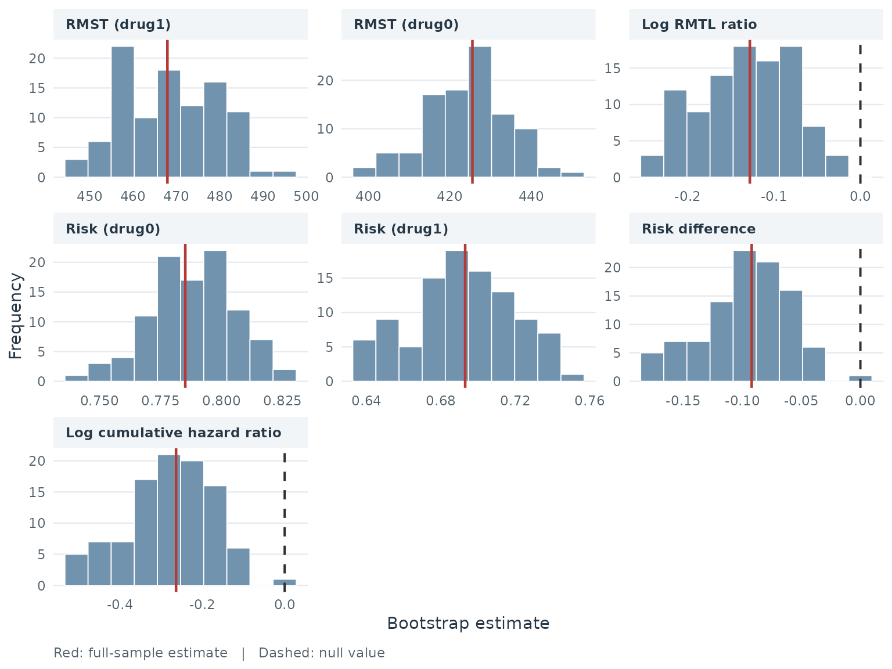
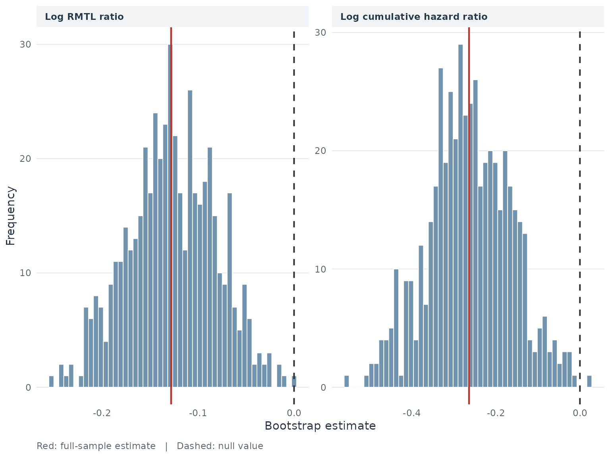
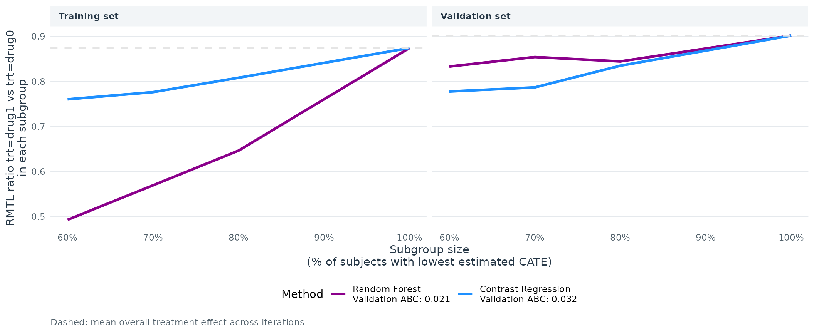
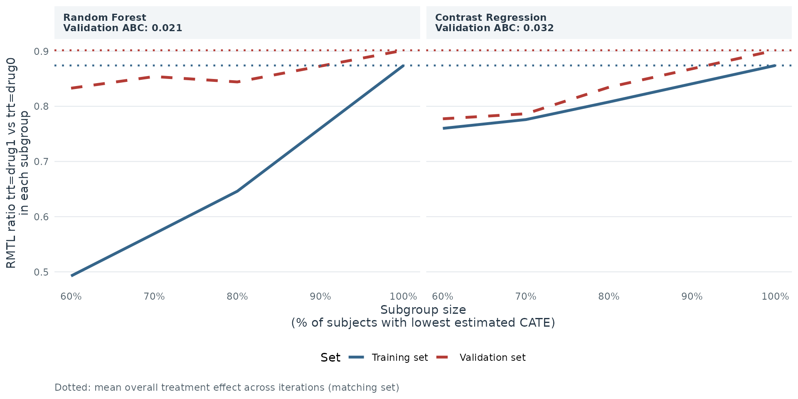
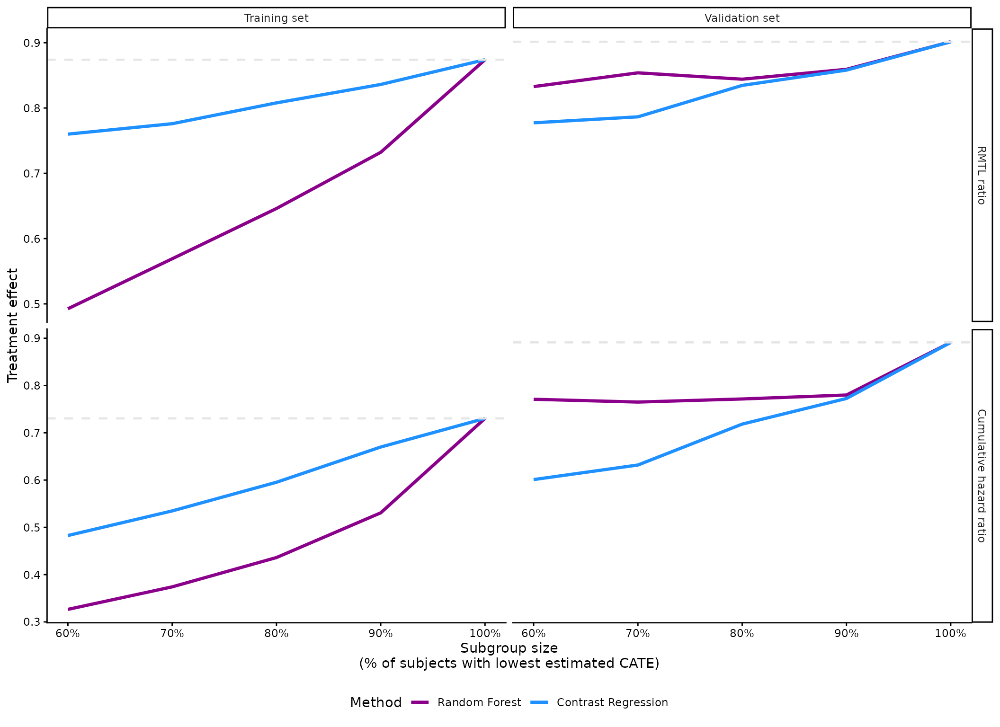
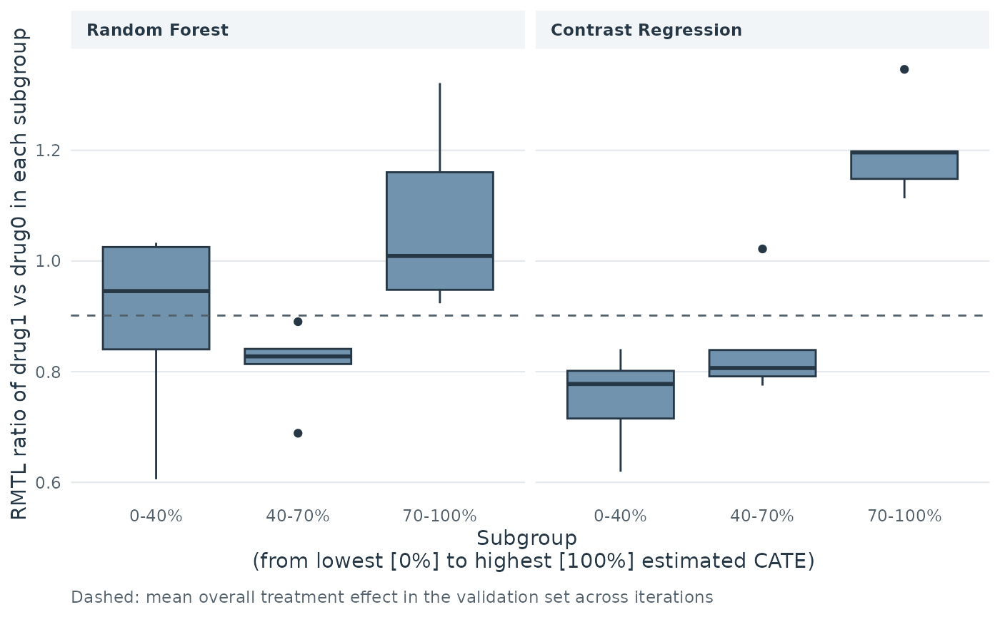
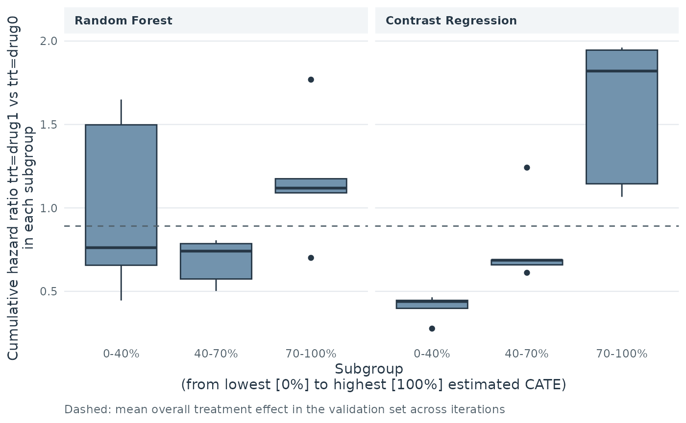

Estimating and validating treatment effects for survival outcomes
Vignette 2 of 4
November 16, 2026
Source:vignettes/Survival-examples.Rmd
Survival-examples.Rmd
This vignette demonstrates how to use precmed to
estimate average and conditional average treatment effects (ATEs and
CATEs) for survival outcomes. Using fully synthetic data inspired by a
multiple sclerosis treatment comparison, we model restricted mean time
lost, compare CATE scoring methods through internal validation, and
interpret treatment effects in responder subgroups.
For background on marginal and conditional treatment effects, see Chapter 5 (Nguyen et al. 2026). Chapter 17 introduces personalized treatment-effect prediction (Hoogland et al. 2026).
Example data
We generate 4,000 synthetic observations with
simulate_survival() and set a seed for reproducibility. The
data contain baseline characteristics, treatment, observed time and an
event indicator.
survival_data <- simulate_survival(n = 4000, seed = 20261114)Treatment is assigned according to the propensity model; its weights
can be changed to explore different treatment proportions and degrees of
overlap. For example,
simulate_survival(n = 4000, seed = 1, ps_weights = c(intercept = -1), conditional_hr = 0.8)
changes the propensity intercept and the conditional HR at age 48 with
no previous relapses. Named ps_weights and
lp_weights override the specified defaults; see
?simulate_survival for their definitions. The table below
summarizes baseline characteristics by treatment group.
| level |
Overall (n = 4000) |
drug0 (n = 1873) |
drug1 (n = 2127) |
|
|---|---|---|---|---|
| Age (mean (SD)) | 48.0 (8.8) | 43.9 (8.1) | 51.5 (7.8) | |
| Gender (%) | male | 1139 (28.5) | 520 (27.8) | 619 (29.1) |
| female | 2861 (71.5) | 1353 (72.2) | 1508 (70.9) | |
| Previous treatment (%) | drugA | 1827 (45.7) | 857 (45.8) | 970 (45.6) |
| drugB | 1399 (35.0) | 608 (32.5) | 791 (37.2) | |
| drugC | 774 (19.4) | 408 (21.8) | 366 (17.2) | |
| Previous medical cost ($) (mean (SD)) | 14581.8 (10056.0) | 14455.3 (9675.7) | 14693.1 (10380.4) | |
| Previous number of symptoms (%) | 0 | 1860 (46.5) | 880 (47.0) | 980 (46.1) |
| 1 | 1365 (34.1) | 642 (34.3) | 723 (34.0) | |
| >=2 | 775 (19.4) | 351 (18.7) | 424 (19.9) | |
| Previous number of relapses (%) | 0 | 1782 (44.5) | 850 (45.4) | 932 (43.8) |
| 1 | 1469 (36.7) | 681 (36.4) | 788 (37.0) | |
| 2 | 567 (14.2) | 252 (13.5) | 315 (14.8) | |
| 3 | 145 ( 3.6) | 71 ( 3.8) | 74 ( 3.5) | |
| 4 | 27 ( 0.7) | 14 ( 0.7) | 13 ( 0.6) | |
| 5 | 10 ( 0.2) | 5 ( 0.3) | 5 ( 0.2) |
The treatment and survival outcome variables have distinct roles:
We will use
yas the survival outcome, which is the number of days until the first relapse or censoring, whichever comes first.We will use
das the event indicator, where represents an event and represents censoring. The censoring rate is 61.8%.We will use
trtas the treatment variable, which has 2 drugs (drug0 and drug1).
For convenience, age is centered at 48 years and
previous_cost is centered at 14,362 USD and divided by
24,266 USD.
The Kaplan–Meier curves below show the observed relapse-free survival experience in each treatment group. Marks on the curves indicate censored observations. These are unadjusted group comparisons; differences between the curves may reflect baseline differences as well as treatment effects.
km_fit <- survfit(Surv(y, d) ~ trt, data = survival_data)
plot(km_fit, col = c("steelblue", "darkorange3"), lty = 1:2, lwd = 2,
mark.time = TRUE, xlab = "Days since treatment initiation",
ylab = "Relapse-free survival probability", ylim = c(0, 1))
legend("bottomleft", legend = c("drug0", "drug1"),
col = c("steelblue", "darkorange3"), lty = 1:2, lwd = 2, bty = "n")
Estimate the average treatment effect
Unadjusted treatment comparison
We first compare time to first relapse between treatment groups using a Cox model with treatment as the only predictor. This unadjusted, marginal association does not account for differences in patient characteristics.
output_cox <- coxph(Surv(y, d) ~ trt, data = survival_data)
summary(output_cox)
#> Call:
#> coxph(formula = Surv(y, d) ~ trt, data = survival_data)
#>
#> n= 4000, number of events= 1530
#>
#> coef exp(coef) se(coef) z Pr(>|z|)
#> trtdrug1 -0.02602 0.97431 0.05118 -0.508 0.611
#>
#> exp(coef) exp(-coef) lower .95 upper .95
#> trtdrug1 0.9743 1.026 0.8813 1.077
#>
#> Concordance= 0.502 (se = 0.007 )
#> Likelihood ratio test= 0.26 on 1 df, p=0.6
#> Wald test = 0.26 on 1 df, p=0.6
#> Score (logrank) test = 0.26 on 1 df, p=0.6The estimated hazard ratio (HR) for drug 1 versus drug 0 is 0.97. It compares instantaneous relapse hazards among patients still event-free and does not by itself establish a causal treatment effect.
We can examine the proportional-hazards assumption using scaled Schoenfeld residuals. A roughly horizontal curve is consistent with a constant HR over time; the dashed curves show approximate 95% uncertainty bands.
ph_unadjusted <- cox.zph(output_cox, transform = "identity")
print(ph_unadjusted)
#> chisq df p
#> trt 0.221 1 0.64
#> GLOBAL 0.221 1 0.64
plot(ph_unadjusted, var = "trt", hr = TRUE, resid = FALSE,
xlab = "Days since treatment initiation",
ylab = "Unadjusted hazard ratio: drug1 vs drug0")
abline(h = exp(coef(output_cox)[1]), lty = 3, col = "steelblue")
The dotted line is the constant HR from the Cox model. The smooth curve suggests how the treatment association may vary over time; it is a diagnostic rather than a precise estimate at every time point. The proportional-hazards test for the treatment term gives p = 0.638. This test assesses whether the treatment association changes over time; a large p-value does not prove that the HR is constant. Later follow-up is less informative when fewer patients remain at risk, as reflected in the wider uncertainty bands.
Covariate-adjusted treatment comparison
In this synthetic dataset, treatment assignment depends on baseline characteristics rather than being randomized. To account for measured baseline differences, we first consider a Cox model that adjusts for age, sex, previous medical cost and previous relapses.
output_cox_adjusted <- coxph(
Surv(y, d) ~ trt + age + female + previous_cost + previous_number_relapses,
data = survival_data
)
summary(output_cox_adjusted)
#> Call:
#> coxph(formula = Surv(y, d) ~ trt + age + female + previous_cost +
#> previous_number_relapses, data = survival_data)
#>
#> n= 4000, number of events= 1530
#>
#> coef exp(coef) se(coef) z Pr(>|z|)
#> trtdrug1 -0.305526 0.736736 0.057627 -5.302 1.15e-07 ***
#> age 0.033694 1.034268 0.003299 10.215 < 2e-16 ***
#> female 0.172062 1.187751 0.057885 2.972 0.00295 **
#> previous_cost 0.163731 1.177898 0.060511 2.706 0.00681 **
#> previous_number_relapses 0.059766 1.061588 0.028293 2.112 0.03465 *
#> ---
#> Signif. codes: 0 '***' 0.001 '**' 0.01 '*' 0.05 '.' 0.1 ' ' 1
#>
#> exp(coef) exp(-coef) lower .95 upper .95
#> trtdrug1 0.7367 1.3573 0.6581 0.8248
#> age 1.0343 0.9669 1.0276 1.0410
#> female 1.1878 0.8419 1.0604 1.3304
#> previous_cost 1.1779 0.8490 1.0462 1.3262
#> previous_number_relapses 1.0616 0.9420 1.0043 1.1221
#>
#> Concordance= 0.575 (se = 0.008 )
#> Likelihood ratio test= 123.3 on 5 df, p=<2e-16
#> Wald test = 121.5 on 5 df, p=<2e-16
#> Score (logrank) test = 121.7 on 5 df, p=<2e-16The adjusted HR is 0.74, compared with 0.97 in the unadjusted model. The adjusted HR is conditional on the included covariates and does not necessarily represent a causal average treatment effect. Adjustment cannot remove confounding from unmeasured variables, and a causal interpretation also requires appropriate model specification, treatment overlap and assumptions about censoring.
For the adjusted model, the proportional-hazards test for the treatment term gives p = 0.248. This test assesses whether the treatment HR changes over time; it does not test whether the treatment effect is zero. The global proportional-hazards test gives p = 0.602 and assesses the model covariates jointly, so evidence of non-proportional hazards may arise from covariates other than treatment. A large p-value does not establish that the proportional-hazards assumption holds.
Population-level treatment comparison over a fixed horizon
The unadjusted Cox model compares treatment groups without accounting for differences in their characteristics. The adjusted Cox model accounts for the selected covariates, but its HR is conditional on those covariates and summarizes the treatment association using a single HR. The diagnostics can be used to assess changes in this association over time; estimates often become less informative later in follow-up. Neither comparison directly describes the average time patients remain relapse-free under each treatment.
We now use atefit() to estimate population-level
outcomes over a specified follow-up horizon. For restricted mean
survival time (RMST) and restricted mean time lost (RMTL), it combines
outcome and propensity score models with an adjustment for censoring to
estimate population-level outcomes under each treatment. These measures
summarize time over the chosen period without requiring a constant
treatment HR. Under appropriate assumptions, the population-level
comparison can be interpreted as a causal treatment effect.
atefit() also estimates a population-level cumulative
hazard ratio at the horizon. It uses bootstrap resampling to estimate
uncertainty for all reported measures.
RMST is the average event-free time up to a chosen horizon,
tau0; RMTL is tau0 - RMST. The RMTL ratio
compares time lost under drug 1 with time lost under drug 0 over that
horizon; for relapse, a ratio below 1 favors drug 1. Its interpretation
depends on the horizon. Chapter 20 discusses RMTL for ratio-based
treatment effects (Jiang et al. 2026).
The cumulative hazard ratio compares the cumulative hazards,
,
under the two treatments. atefit() estimates the
treatment-specific survival probabilities using augmented inverse
probability of treatment weighting (AIPTW), combining outcome,
propensity score and censoring models without discretizing event times.
The estimator requires appropriate censoring assumptions and a correctly
specified censoring model; its treatment-model double robustness does
not protect against censoring-model misspecification. The calculation
reuses the treatment-specific Cox outcome fits, propensity scores and
censoring model used for RMST. This ratio is distinct from an
instantaneous HR. If either estimated survival probability is outside
the interval (0, 1), the ratio is undefined; bootstrap inference is also
unavailable if any replicate is undefined.
For this example, we choose an illustrative horizon: the smaller 95th percentile of observed follow-up in the two treatment groups.
tau0 <- with(survival_data,
min(quantile(y[trt == "drug1"], 0.95), quantile(y[trt == "drug0"], 0.95)))
tau0
#> [1] 778.4532The horizon is approximately 778.5 days. It defines the period over which we will compare restricted mean outcomes. This choice is not derived from the proportional-hazards diagnostics and does not establish that the HR is constant before the horizon. It uses observed times, including censoring, and does not guarantee sufficient follow-up; inspect numbers at risk and censoring near the horizon in both groups and choose a clinically meaningful horizon with adequate support.
The RMTL estimator is doubly robust with respect to the propensity score (PS) and outcome models: under the required assumptions, either model may be correctly specified. It also depends on inverse probability of censoring weights (IPCW) and a correctly specified censoring model. The function provides standard errors, confidence intervals and p-values based on bootstrap. If an out-of-range RMST estimate is replaced by an outcome-model estimate, that fallback does not retain the doubly robust guarantee.
IPCW adjusts for censoring by weighting patients according to their estimated probability of remaining uncensored. Causal interpretation requires assumptions including no unmeasured treatment confounding, adequate treatment overlap, appropriate censoring assumptions and sufficient follow-up. Chapter 17 discusses identification of treatment effects in non-randomized data (Hoogland et al. 2026). The Cox HR and the RMTL ratio describe different aspects of survival and should be interpreted separately.
The mandatory arguments for atefit() are:
The
responseargument specifies the type of outcome in the data. For survival outcomes,response= “survival”. This informs the function of the necessary arguments and methods to use.The argument
dataindicates the data frame in which the outcome, treatment and covariates specified in eithercate.modelorps.modelshould be fetched.The argument
cate.modelspecifies the CATE model as a formula, with the survival object from thesurvivalpackage,Surv(y, d), supplied on the left-hand side and the explanatory covariates supplied on the right-hand side. In the example below, we chose to specify to CATE as a linear combination of the following covariates: age, sex, medical costs in the year prior to treatment initiation, and number of relapses in the year prior to treatment initiation. Non-linear or interaction terms could also be included. Note that the treatment variable is not supplied incate.modelsince this is an outcome model.The
ps.modelargument specifies the PS model as a formula, with the treatment variabletrton the left-hand side and the covariates (age and previous treatment in this example) on the right-hand side. The variabletrtmust be supplied as a numeric variable taking only 2 values, “1” for active treatment and “0” for control or comparator. If it is not the case,atefit()will stop with error iftrttakes more than 2 distinct values or will automatically transformtrtinto a numeric variable. In this example,trt(a factor variable taking values “drug0” and “drug1”) was transformed and an informational message is shown (see output below):Variable trt was recoded to 0/1 with drug0->0 and drug1->1. If the data are from a RCT, it suffices to specifyps.model= trt ~ 1. The PS model is used in the doubly robust RMTL estimation.
We also specify the optional argument tau0, the horizon
for RMST and RMTL, using the value calculated above.
Now estimate the ATE using an outcome model with age, sex, previous
cost and previous relapses, and a PS model with age and
previous_treatment.
output_atefit <- atefit(response = "survival",
data = survival_data,
cate.model = survival::Surv(y, d) ~ age + female + previous_cost + previous_number_relapses,
ps.model = trt ~ age + previous_treatment,
tau0 = tau0,
seed = 999)
#> Variable trt was recoded to 0/1 with drug0->0 and drug1->1.When verbose = 1, the function outputs a progress bar in
the console.
output_atefit
#> Average treatment effect:
#>
#> estimate SE CI.lower CI.upper
#> log.rmtl.ratio -0.1279897 0.04568911 -0.2175387 -0.03844067
#> log.cumulative.hazard.ratio -0.2639637 0.09846880 -0.4569590 -0.07096841
#> pvalue
#> log.rmtl.ratio 0.005089449
#> log.cumulative.hazard.ratio 0.007347192
#>
#> Estimated RMST:
#>
#> estimate SE CI.lower CI.upper pvalue
#> rmst1 467.9432 10.432618 447.4956 488.3908 0
#> rmst0 425.5458 9.302363 407.3135 443.7781 0
#> Variable trt was recoded to 0/1 with drug0->0 and drug1->1.The output of atefit() shows the point estimate,
standard error (“SE”), lower (“CI.lower”) and upper (“CI.upper”) bound
of the 95% confidence interval, and the p-value (“pvalue”) for 4
estimands:
the restricted mean survival time under drug 1 (
$rmst1)the restricted mean survival time under drug 0 (
$rmst0)the log RMTL ratio (
$log.rmtl.ratio), which is the log of the ratio oftau0-$rmst1divided bytau0-$rmst0the log population-level cumulative hazard ratio at
tau0($log.cumulative.hazard.ratio).
The following comparison places the earlier Cox models alongside a
covariate-adjusted Cox model censored at tau0 and the
population-level cumulative hazard ratio. The first three rows are
instantaneous Cox HRs with model-based confidence intervals; the last is
a ratio of cumulative hazards with a bootstrap-based confidence
interval.
| Comparison | Ratio | 95% CI |
|---|---|---|
| Unadjusted Cox, all follow-up | 0.97 | 0.88 to 1.08 |
| Adjusted Cox, all follow-up | 0.74 | 0.66 to 0.82 |
| Adjusted Cox, through tau0 | 0.74 | 0.66 to 0.83 |
| AIPTW cumulative hazard ratio at tau0 | 0.77 | 0.63 to 0.93 |
The differences reflect covariate adjustment, the follow-up horizon and the estimand and estimation method. In particular, the cumulative hazard ratio is not an instantaneous Cox HR; similarity or differences between the numbers alone do not establish which model is correct.
For example, the log RMTL ratio of -0.13 and the 95% confidence
interval of (-0.22, -0.04) are displayed in the output. The estimated
ratio and its interval can be obtained by exponentiating these log-scale
values. A ratio above 1 indicates more time lost before
tau0 under drug 1; the interval describes uncertainty in
that comparison. The RMST estimates provide the corresponding event-free
times up to tau0.
The RMTL and cumulative hazard ratios compare the treatment coded as
1 with the treatment coded as 0; their log ratios are reported in the
output. Here, trt is a factor, so atefit()
recodes drug0 to 0 and drug1 to 1. The ratios
therefore compare drug 1 with drug 0. The recoding is reported as an
informational message and can be inspected with
diagnostics():
diagnostics(output_atefit)
#> method split iteration group subgroup type measure
#> 1 <NA> <NA> NA <NA> <NA> info <NA>
#> message
#> 1 Variable trt was recoded to 0/1 with drug0->0 and drug1->1.For other treatment labels, check the mapping before interpreting the ratio. Alternatively, code the treatment as 0 and 1 explicitly to choose the reference group.
plot(output_atefit) displays the bootstrap estimates for
the four reported quantities. A solid red line marks the full-sample
estimate; a dashed black line marks the null value of 0 in the log-ratio
panels. Set null.value to another value on the log scale,
or to NULL or NA to omit the null line. The
treatment-specific RMST panels have no null line.
plot(output_atefit)

Histograms of bootstrap estimates for the four reported quantities.
Estimate CATE scores
Chapter 17 describes treatment effect heterogeneity and CATE prediction (Hoogland et al. 2026). In this example, scores are on the log-RMTL-ratio scale, so exponentiating a score gives an estimated conditional RMTL ratio. Lower scores indicate greater estimated benefit from drug 1. Fitting scores on the full dataset does not establish their performance in new patients.
Now we have calculated the ATE we know the effect of both treatments
on average, but this effect might not be the same for all patients.
Thus, it might be worthwhile to check if there are subgroups that
respond differently to the treatments. We can calculate the Conditional
Average Treatment Effect (CATE) score which calculates the ATE for
different subgroups in the data. If no internal validation is needed (we
get back to that later), we can use the catefit() function
to a model directly to the entire data set to estimate the CATE score.
For the catefit() function we have to define the
score.method. This arguments specifies the precision
medicine (PM) method to be used to calculate the CATE scores. There are
a total of 5 scoring methods implemented:
The mandatory arguments in catefit() are:
response: “survival” in this example because we use have data with a survival outcome (e.g., number of days until the first relapse or censoring))data: the name of the data set. (survival_data)-
score.method: argument specifies the precision medicine (PM) methods to be used to calculate the CATE scores. There are a total of 5 scoring methods implemented:poissonfits a Poisson model separately by treatment group.boostinguses gradient boosted regression models (GBM) separately by treatment group.randomForestfits a random forest model by treatment group.twoRegimplements the doubly robust two regressions estimator in (Yadlowsky et al. 2021).contrastRegimplements the doubly robust contrast regression estimator from (Yadlowsky et al. 2021).
cate.model: A formula describing the outcome model to be fitted. The outcome must appear on the left-hand side. In the example, we choose to specify to outcome model as a linear combination of the following covariates: age, sex, medical costs in the year prior to treatment initiation, and number of relapses in the year prior to treatment initiation. Non-linear or interaction terms could also be included. Note that the treatment variable is not supplied incate.modelsince this is an outcome model.ps.model: A formula describing the propensity score (PS) model to be fitted. The treatment must appear on the left-hand side and the covariates (age and previous treatment in this example) on the right-hand side. The variabletrtmust be supplied as a numeric variable taking only 2 values, 1 for active treatment and 0 for control or comparator. If it is not the case, the function will stop with error iftrttakes more than 2 distinct values or will automatically transformtrtinto a numeric variable. In this example,trt(a factor variable taking values “drug0” and “drug1”) was transformed and an informational message is shown (see output below):Variable trt was recoded to 0/1 with drug0->0 and drug1->1. If the data are from a RCT, it suffices to specifyps.model= trt ~ 1. The PS model is used to estimate overall and subgroup average treatment effects. It is also used to fit the doubly robust two-regression and contrast-regression CATE scores; other scoring methods need not use it to construct their scores.
We also specified the following non-mandatory arguments to fit with
the data and problem at hand: initial.predictor.method,
tau0, higher.y, seed, and
plot.gbmperf.
initial.predictor.methodspecifies how predictions of the outcome are estimated in two regressions and contrast regression. Flexible models can be used such as GBM (“boosting”), random forests (“randomForest”) or logistic regression (“logistic”). We chose “logistic” because it is relatively faster than boosting methods and random forest.tau0is the horizon for RMTL, chosen as described above; assess follow-up support near this horizon in both treatment groups.higher.ywas set toTRUEbecause relapse is a negative event and longer time to first relapse is more desirable in our example. Hence, we are telling the function that subgroups of high responders to drug1 vs drug0 should have later onset of the first relapse. For a positive event such as discharge, a shorter time may instead be preferable, sohigher.y = FALSEmay be appropriate. It is important for this argument to match with the nature ofyoutcome because it will affect how the subgroups are defined by the CATE scores and the performance metrics.We set a random seed
seed= 999 to reproduce the results.We avoided generating the boosting performance plots by specifying
plot.gbmperf= FALSE.
Please see the Function description section for details.
If you run into errors or warnings with your data, it might be
helpful to go over the descriptions to see if you need to alter the
default values. In this toy example, we keep the default values of the
remaining arguments. For this toy example we selected
randomForest and contrastReg to limit run
time.
tau0 <- with(survival_data,
min(quantile(y[trt == "drug1"], 0.95), quantile(y[trt == "drug0"], 0.95)))
output_catefit <- catefit(response = "survival",
data = survival_data,
score.method = c( "randomForest", "contrastReg"),
cate.model = survival::Surv(y, d) ~ age + female + previous_cost + previous_number_relapses,
ps.model = trt ~ age + previous_treatment,
initial.predictor.method = "logistic",
tau0 = tau0,
higher.y = TRUE,
seed = 999,
plot.gbmperf = FALSE)
#> Variable trt was recoded to 0/1 with drug0->0 and drug1->1.Each method specified in score.method has the following
sets of results in catefit():
-
scorecontains the log-transformed estimated CATE scores for each subject. The relationship between covariates and the score depends on the scoring method. For survival outcomes, lower scores correspond to high responders to drug 1 whenhigher.y= TRUE; higher scores correspond to high responders whenhigher.y= FALSE. In our example, the survival outcome is time to first relapse, which is a negative event, so higher values indicate later onset of the first relapse. Hence, we specifyhigher.y= TRUE in the example. Each subject has 1 CATE score so the length of this output is 4,000 for our toy example. Below we show the CATE scores estimated with contrast regression for the first 6 subjects in the data.
length(output_catefit$score.contrastReg)
#> [1] 4000
head(output_catefit$score.contrastReg)
#> [1] 0.02667802 0.43303845 -0.30655826 -0.03183065 -0.05597842 -0.08235174-
coefficientscontains the estimated coefficients of the CATE score for each scoring method. It is a data frame of the covariates (including intercept) as rows and scoring methods as columns. In our toy example, there are 4 covariates in thecate.model, plus the intercept, so there are 5 rows of estimated coefficients within each column. Boosting method does not estimate coefficients (it directly predicts the score) so they do not have coefficient results here.
output_catefit$coefficients
#> contrastReg
#> (Intercept) 0.09036581
#> age -0.02371135
#> female -0.13567528
#> previous_cost 0.06657675
#> previous_number_relapses -0.13289800The contrast-regression coefficients above describe how the fitted log-RMTL score changes with each covariate. They are estimates from these synthetic data.
The chr outputs provide subgroup cumulative hazard
ratios at tau0, estimated using the same outcome,
propensity-score and censoring models as the subgroup RMTL estimates.
The hr outputs are instead covariate-adjusted Cox hazard
ratios, with follow-up censored at tau0. These are
different measures and should be interpreted separately. An undefined
cumulative hazard ratio is returned as NA, with a warning
recorded for the subgroup. Use measure = "cumulative_hr" in
survival validation plots and box plots to display cumulative hazard
ratios.
-
atecontains estimated ATEs by each nested subgroup of high responders to drug 1 defined byprop.cutoff. The subgroups are defined based on the estimated CATE scores with the specified scoring method. In this example, we show the estimated ATEs of subgroups identified by CATE scores of the contrast regression. For example, the estimated ATE for the subgroup of subjects constructed based on the 50% (“prop0.5”) lowest CATE scores estimated from the contrast regression is 0.74.
output_catefit$ate.contrastReg
#> prop0.5 prop0.6 prop0.7 prop0.8 prop0.9 prop1
#> 0.7427012 0.7494395 0.7727382 0.8214067 0.8349706 0.8798625The corresponding subgroup cumulative hazard ratios are available as:
output_catefit$chr.contrastReg
#> prop0.5 prop0.6 prop0.7 prop0.8 prop0.9 prop1
#> 0.4647887 0.4834859 0.5528552 0.6324199 0.6834531 0.7680014You are encouraged to summarize and visualize the outputs in
whichever way that fits their particular situation outside the package’s
functions. For example, it is possible to plot the densities of all CATE
scores with ggplot. The score distributions summarize
variation in predicted treatment benefit across patients.
dataplot <- data.frame(
score = factor(rep(
c("Random Forest", "Contrast regression"),
each = length(output_catefit$score.randomForest)
)),
value = c(output_catefit$score.randomForest, output_catefit$score.contrastReg)
)
ggplot(dataplot, aes(x = value, fill = score)) +
geom_density(alpha = 0.5) +
theme_classic() +
labs(x = "Estimated CATE score", y = "Density", fill = "Method")
Compare the spread of the estimated scores for the two methods. Differences may reflect model flexibility, estimation noise or overfitting; a narrower distribution could also reflect constraints imposed by the contrast-regression model. The plot alone cannot distinguish these explanations. Internal validation assesses whether the predicted differences in treatment benefit persist in patients not used to fit the scores.
Internally validate CATE scores
How internal validation works
For broader guidance on validation strategies and the assessment of discrimination, calibration, and decision accuracy, see Chapter 19, “Validation of prediction models for patient outcomes and individualized treatment effect” (Thao et al. 2026).
In each iteration, scores are fitted in a training set and evaluated in a separate validation set. For example, the 60% of validation patients with the lowest scores form a high-responder subgroup in this example. Repeating the split shows variation across iterations. Selecting the best method using the same validation results can make its reported performance optimistic; an independent evaluation can assess the selected method.
The catecv() function provides the same estimation as
the catefit() but via cross-validation (CV). With the
catecv() function internal CV is applied to reduce optimism
in choosing the CATE estimation method that captures the most treatment
effect heterogeneity. The CV is applied by repeating the following steps
cv.n times:
Split the data into a training and validation set according to
train.propargument. The training and validation sets must be balanced with respect to covariate distributions and doubly robust treatment effect estimates (seeerror.maxargument).Estimate the CATE score in the training set with the specified scoring method.
Predict the CATE score in the validation set using the scoring model fitted from the training set.
-
Build nested subgroups of treatment responders in the training and validation sets, separately, and estimate the ATE within each nested subgroup. For each element i of
prop.cutoffargument (e.g.,prop.cutoff[i] = 0.6), take the following steps:Identify high responders as observations with the 60% (i.e.,
prop.cutoff[i]x100%) lowest (ifhigher.y = TRUE) or highest (ifhigher.y = FALSE) estimated CATE scores.Estimate the ATE in the subgroup of high responders using a doubly robust estimator.
Conversely, identify low responders as observations with the 40% (i.e.,
1 - prop.cutoff[i]x100%) highest (ifhigher.y = TRUE) or lowest (ifhigher.y = FALSE) estimated CATE scores.Estimate the ATE in the subgroup of low responders using a doubly robust estimator.
If
abc = TRUE, calculate the area between the ATE and the series of ATEs in nested subgroups of high responders in the validation set. (for more information about the abc score, see Validation curves and the ABC statistics)Build mutually exclusive subgroups of treatment responders in the training and validation sets, separately, and estimate the ATE within each subgroup. Mutually exclusive subgroups are built by splitting the estimated CATE scores according to prop.multi.
Run internal validation
For each scoring method, catecv() also returns
chr.<method> matrices for nested and disjoint
subgroups in the training and validation folds.
overall.chr.train and overall.chr.valid report
the corresponding overall fold estimates.
Now we can use the catecv() function to run internal
validation to compare the different scoring methods. The mandatory
arguments are similar to atefit() and
catefit(): The mandatory arguments are:
response, data, score.method,
cate.model, and ps.model. See above for more
details on these arguments. For this toy example we again selected
randomForest and contrastReg limit run
time.
We also specified the following non-mandatory arguments to fit with
the data and problem at hand: initial.predictor.method,
ipcw.model, verbose,
followup.time, tau0, higher.y,
cv.n, surv.min, seed, and
plot.gbmperf.
initial.predictor.methodspecifies how predictions of the outcome are estimated in two regressions and contrast regression. Flexible models can be used such as GBM (“boosting”), random forests (“randomForest”) or logistic regression (“logistic”). We chose “logistic” because it is relatively faster than boosting methods and random forest.followup.timespecifies the maximum follow-up time in the data. We set it default asNULL, which indicates unknown potential censoring time.tau0is the horizon for RMTL, chosen as described above; assess follow-up support near this horizon in both treatment groups.higher.ywas set toTRUEbecause relapse is a negative event and longer time to first relapse is more desirable in our example. Hence, we are telling the function that subgroups of high responders to drug1 vs drug0 should have later onset of the first relapse. For a positive event such as discharge, a shorter time may instead be preferable, sohigher.y = FALSEmay be appropriate. It is important for this argument to match with the nature ofyoutcome because it will affect how the subgroups are defined by the CATE scores and the performance metrics.surv.mintruncates the censoring probability estimated from the IPCW model with a lower limit to prevent extremely small censoring probabilities. It is recommended to choose a small positive value close to 0. We chose0.025in the example, which corresponds to the default value.We performed 5 CV iterations by specifying
cv.n= 5. Typically, more CV iterations are desirable although associated with longer computational times.We set a random seed
seed= 999 to reproduce the results.We avoided generating the boosting performance plots by specifying
plot.gbmperf= FALSE.We set
verbose = 0to keep the example output concise. Setverbose = 1to show CV progress, orverbose = 2to also report errors and warnings from the CV procedure.
There are many other non-mandatory arguments that
catecv() can accept. Please see the Customizing CATE models and
validation vignette for more examples and the Function description
Function
description for details. If you run into errors or warnings with
your data, it might be helpful to go over the descriptions to see if you
need to alter the default values. In this toy example, we keep the
default values of the remaining arguments.
We reuse the tau0 calculated above so that validation
estimates RMTL over the same horizon as the average treatment effect
example. With the default 75% training split, the validation set
contains about 1,000 patients. The smallest nonempty nested
low-responder group contains 20% of that set (about 200 patients), while
the mutually exclusive groups each contain at least 30%. Actual
treatment and event counts within each group may be smaller and should
be checked.
output_catecv <- catecv(response = "survival",
data = survival_data,
score.method = c("randomForest", "contrastReg"),
cate.model = survival::Surv(y, d) ~ age + female +
previous_cost + previous_number_relapses,
ps.model = trt ~ age + previous_treatment,
initial.predictor.method = "logistic",
followup.time = NULL,
tau0 = tau0,
higher.y = TRUE,
surv.min = 0.025,
prop.cutoff = c(0.6, 0.7, 0.8, 1),
prop.multi = c(0, 0.4, 0.7, 1),
cv.n = 5,
seed = 999,
plot.gbmperf = FALSE,
verbose = 0)
#> Variable trt was recoded to 0/1 with drug0->0 and drug1->1.Inspect validation results
The output of catecv() is an object of class “precmed”
and here we named it output_catecv. It carries the relevant
information to use in the next step of the workflow which selects the
method (among those specified in the argument score.method)
capturing the highest level of treatment effect heterogeneity. The
output, which is described below, will be used in the functions
abc(), plot() and boxplot().
For each method specified in the argument score.method,
the following 3 groups of outputs are generated: high,
low and group. We use the results from
randomForest as an example.
Nested subgroups of high responders
This output stores the ATEs - the ratio of RMTL between drug1 vs
drug0 in this example - in nested subgroups of patients of high
responders to drug 1 in the training
($ate.est.train.high.cv) and validation
($ate.est.valid.high.cv) sets across all CV iterations.
When higher.y = TRUE for survival outcomes, which is the
case in this example, lower CATE scores correspond to high responders to
drug1. When higher.y = FALSE for survival outcomes, higher
CATE scores correspond to high responders to drug1. Note that this is
different for count outcomes. The direction of CATE scores depends on
both higher.y and outcome type.
output_catecv$ate.randomForest$ate.est.train.high.cv
#> cv1 cv2 cv3 cv4 cv5
#> prop0.6 0.4951334 0.4969934 0.5151479 0.4454503 0.5098675
#> prop0.7 0.5650587 0.5658140 0.5932439 0.5542147 0.5670414
#> prop0.8 0.6350284 0.6523356 0.6566739 0.6596998 0.6266324
#> prop1 0.8618214 0.8763156 0.8851667 0.8773175 0.8693505
output_catecv$ate.randomForest$ate.est.valid.high.cv
#> cv1 cv2 cv3 cv4 cv5
#> prop0.6 0.8350406 0.8945916 0.7231150 0.8262132 0.8851521
#> prop0.7 0.8656700 0.9046940 0.8007250 0.8038333 0.8946092
#> prop0.8 0.8945529 0.8458138 0.7972482 0.8204835 0.8626967
#> prop1 0.9473602 0.8947570 0.8907424 0.8731632 0.9015339The output is a matrix with columns corresponding to the CV
iterations, labeled from 1 to cv.n, and rows corresponding
to nested subgroups. The nested subgroups of patients are defined by the
argument prop.cutoff. Here, we use
c(0.6, 0.7, 0.8, 1) which defines nested subgroups with the
60%, 70%, 80% and 100% lowest (highest if higher.y = FALSE)
CATE scores estimated by random forest. The rows in the output are
labeled to reflect the user-specified proportions used to build the
subgroups.
For example, in the training set and in the 4th CV iteration (4th column labeled “cv4”), the subgroup defined with the 80% lowest CATE scores (3rd row labeled “prop0.8”) has an estimated RMTL ratio of 0.66. In contrast, the subgroup defined with all patients (last row labeled “prop1”) in the 4th CV iteration has an estimated RMTL ratio of 0.877.
Nested subgroups of low responders
This output stores the ATEs in nested subgroups of low
responders to drug1 in the training
($ate.est.train.low.cv) and validation
($ate.est.valid.low.cv) sets across all CV iterations. When
higher.y = TRUE for survival outcomes, higher CATE scores
correspond to low responders to drug1. When higher.y =
FALSE for survival outcomes, lower CATE scores correspond to low
responders to drug1. Again, this is different for count outcomes. The
direction of CATE scores depends on both higher.y and
outcome type.
output_catecv$ate.randomForest$ate.est.train.low.cv
#> cv1 cv2 cv3 cv4 cv5
#> prop0.4 2.057115 2.159150 1.999794 2.266325 2.100201
#> prop0.3 2.705007 2.720842 2.353439 2.917494 2.686156
#> prop0.2 3.682680 3.160212 3.048414 3.506051 3.923344The outputs are also matrices with columns corresponding to the CV iterations and rows corresponding to nested subgroups.
The output for the low responders brings additional information to
the user. It gives the ATEs in the complement of each nested subgroup of
high responders. For example, the complement of the subgroup of high
responders defined as patients with the 60% lowest (highest if
higher.y = FALSE) estimated CATE scores is the subgroup of
low responders defined as patients with the 40% highest (lowest if
higher.y = FALSE) estimated CATE scores, labeled as
“prop0.4”. In the training set and in the first CV iterations, the
estimated RMTL ratio is 0.495 in the 60% high responders to drug 1 and
2.057 in the 40% low responders.
Mutually exclusive subgroups
This output stores the ATEs in mutually exclusive multi-category
subgroups of patients in the training
($ate.est.train.group.cv) and validation
($ate.est.valid.group.cv) sets across all CV
iterations.
output_catecv$ate.randomForest$ate.est.train.group.cv
#> cv1 cv2 cv3 cv4 cv5
#> prop0.4 2.0571154 2.1591497 1.9997945 2.2663254 2.1002008
#> prop0.7 0.8220639 0.7449121 0.8374856 0.7544819 0.8238335
#> prop1 0.2412136 0.2807517 0.2715028 0.2141048 0.2653259
output_catecv$ate.randomForest$ate.est.valid.group.cv
#> cv1 cv2 cv3 cv4 cv5
#> prop0.4 1.1604063 1.0091299 1.3216451 0.9236189 0.9479675
#> prop0.7 0.6888083 0.8412021 0.8276704 0.8138356 0.8903427
#> prop1 1.0328881 1.0252757 0.6056148 0.8403807 0.9456674The output is a matrix with columns corresponding to CV iterations
and rows corresponding to mutually exclusive subgroups. With
prop.multi = c(0, 0.4, 0.7, 1) and
higher.y = TRUE, the groups contain patients with the 40%
lowest, middle 30%, and 30% highest estimated CATE scores. In the first
training split, their estimated RMTL ratios are 2.057, 0.822, and 0.241,
respectively.
Inspect errors and warnings
Subgroup estimates can be missing or unstable, for example when a
subgroup has few patients or observed events. Use
diagnostics() to collect the recorded errors and warnings
across methods, splits, subgroups and iterations in a table. An empty
table means no subgroup messages were recorded:
diagnostics(output_catecv)
#> method split iteration group subgroup type
#> 1 contrastReg validation 1 group prop 1 warning
#> measure
#> 1 cumulative hazard ratio
#> message
#> 1 Cumulative hazard ratio is undefined because an estimated survival probability is outside (0, 1).The original nested list is still available as
output_catecv$`errors/warnings`. Review recorded warnings
and interpret affected estimates with caution. The cumulative hazard
ratio can be undefined if an estimated treatment-specific survival
probability lies outside (0, 1). Its augmented estimator adds a weighted
correction to outcome-model predictions; this correction is not
constrained to keep the estimate between zero and one. Small subgroups,
limited follow-up, or extreme weights can make such estimates unstable,
even when the subgroup contains patients.
Compare scoring methods using the ABC statistic
The ABC statistic is calculated by abc() for each
scoring method specified in catecv() and for each of the
cv.n CV iterations using the output object
output_catecv from catecv(). The ABC
corresponds to the area between the curve formed by the ATEs in
subgroups of high responders in the validation set (e.g.,
output_catecv$ate.randomForest$ate.est.valid.high.cv for
random forest) and the horizontal line representing the ATE in the
validation set. A higher ABC indicates greater separation in the
expected direction in this example. Chapter 20 discusses this responder
diagnostic (Jiang et al. 2026).
abc(output_catecv)
#> cv1 cv2 cv3 cv4 cv5
#> randomForest 0.02392067 0.009108896 0.03794881 0.02452175 0.009546674
#> contrastReg 0.03030992 0.038194989 0.04085908 0.02954575 0.030640717The output is a matrix with columns corresponding to the CV
iterations and rows corresponding to the scoring methods specified in
score.method. Individual iterations can differ; summarize
across iterations to compare methods:
abc(output_catecv, combine = "mean")
#> randomForest contrastReg
#> 0.02100936 0.03391009In this example, contrast regression has a higher average ABC than random forest, indicating greater validation-set separation of treatment benefit. The simulated settings were chosen for illustration, so this comparison does not establish that one method will perform better in other data.
Assess responder discrimination with validation curves
Chapter 20 discusses validation curves, ABC statistics, and their interpretation as responder diagnostics (Jiang et al. 2026). These summaries assess how well a score ranks patients by treatment benefit; they do not, by themselves, establish calibration of the predicted CATEs or the clinical value of a treatment rule (Thao et al. 2026).
The ATEs of nested subgroups of high responders to drug1 (e.g.,
output_catecv$ate.randomForest$ate.est.train.high.cv and
output_catecv$ate.randomForest$ate.est.valid.high.cv for
random forest) can be visualized as a side-by-side line plot, with
training results on the left and validation results on the right. The
x-axis is determined by prop.cutoff and the y-axis is the
estimated ATEs averaged over cv.n CV iterations as
specified by cv.i = NULL (default). The estimated ATE is
expressed as a RMTL ratio of drug1 versus drug0 for our toy example. By
default, the function retrieves the name of the treatment variable
(trt) and the original labels (drug0 and
drug1) to specify a meaningful y-axis label. Otherwise, it
is possible to customize the y-axis label via the ylab, for
example, by specifying ylab = “RMTL ratio of drug1 vs drug0
in each subgroup”.
Separation between the validation curve and the overall ATE can
indicate that the score ranks patients by treatment benefit. Because
higher.y = TRUE in this example, a useful ranking would
tend to produce lower RMTL ratios on the left, increasing toward the
overall ratio as the subgroup expands (see Validation curves and the ABC
statistics). The validation curves and ABC can help compare methods,
but selection on these same results warrants an independent
assessment.
plot(output_catecv)
The random forest shows much stronger subgroup separation in training than in validation, consistent with possible overfitting. Contrast regression also shows separation in validation. The plot does not show uncertainty and does not establish that either method will perform well in new patients. An independent evaluation is needed before drawing firm conclusions.
The dashed gray line is the overall treatment ratio in the corresponding training or validation sets, averaged across iterations. The curves meet it at a subgroup size of 100% because that subgroup includes everyone in each respective set.
To compare training and validation curves directly for each scoring
method, use layout = "method". Each panel shows one method,
with a solid training curve and a dashed validation curve. The dotted
lines mark the corresponding overall treatment effects.
plot(output_catecv, layout = "method")
To inspect a single cross-validation iteration instead of the
average, set cv.i in plot(); for example,
cv.i = 2 selects the second iteration. You can use
combine = "median" to show the median across iterations
instead of the default mean.
To compare both measures across the nested subgroups, use
measure = c("rmtl", "cumulative_hr"). The panels show the
RMTL ratio and the cumulative hazard ratio separately; the latter
summarizes cumulative hazards up to tau0 and is not an
instantaneous Cox HR. ABC is shown only for the RMTL plot above.

In each panel, the dashed line is the overall ratio for that measure in the corresponding training or validation sets, averaged across iterations. It is a reference for comparing the score-defined subgroups, not a line of no treatment effect. Objects saved before cumulative hazard ratios were added need to be refitted to plot them.
Compare treatment effects across responder subgroups
Unlike the nested groups in validation curves, these subgroups are mutually exclusive within each iteration. The boxes summarize variation in subgroup estimates across validation iterations. Chapter 20 compares these responder diagnostics (Jiang et al. 2026).
The ATEs of multi-category subgroups that are mutually exclusive can
be visualized as box plots, with 1 box plot for each scoring method.
Only validation results are visualized here. The x-axis is determined by
prop.multi and the y-axis is the estimated ATEs in each
subgroup. We specify the ylab argument accordingly. The
subgroups correspond to each row of the
ate.est.valid.group.cv result in
output_catecv: the 40% lowest (0-40%), middle 30% (40-70%),
and highest 30% (70-100%) estimated CATE scores. Notice that the groups
do not have to be equally spaced in terms of percentiles. The box plot
shows the distribution of the ATEs over all cv.n CV
iterations, instead of a summary statistics like mean or median in
plot().
boxplot(output_catecv,
ylab = "RMTL ratio of drug1 vs drug0 in each subgroup")
Cumulative hazard ratios can also be shown for the mutually exclusive subgroups:
boxplot(output_catecv, measure = "cumulative_hr")
#> Warning: Some cumulative hazard ratios are undefined and are omitted from the
#> plot.
#> Warning: Removed 1 row containing non-finite outside the scale range
#> (`stat_boxplot()`).
The box plots compare estimated RMTL ratios across mutually exclusive score-based subgroups for random forest and contrast regression. Read them alongside the validation curves and ABC statistics to assess subgroup separation and variation across CV iterations. Note that the y-axis can have different scales for different scoring methods.
So far we provided 3 different metrics to summarize, visualize, and evaluate the
catecv()outputs. The user is encouraged to choose their own way of data wrangling that fits to their particular situation.
Other precmed vignettes in this series
1. Estimating and validating treatment
effects for count outcomes
2. Estimating and validating treatment
effects for survival outcomes
3. Customizing CATE models and
validation
4. Methods for estimating and
validating treatment effects